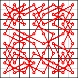
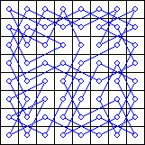
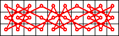
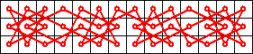
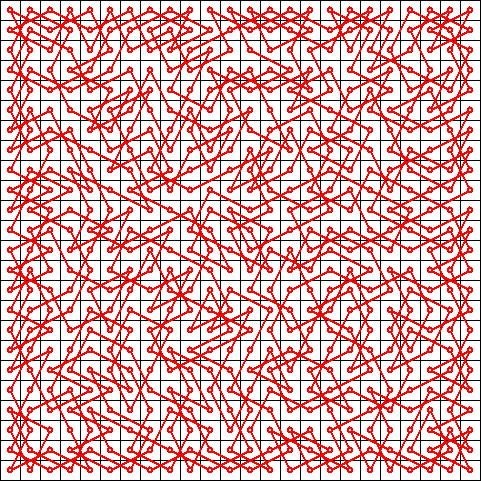
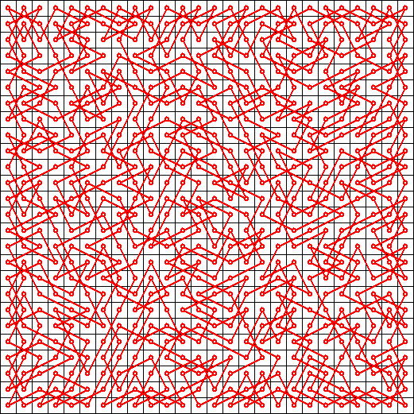
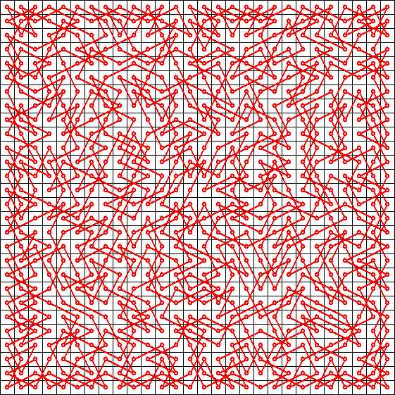
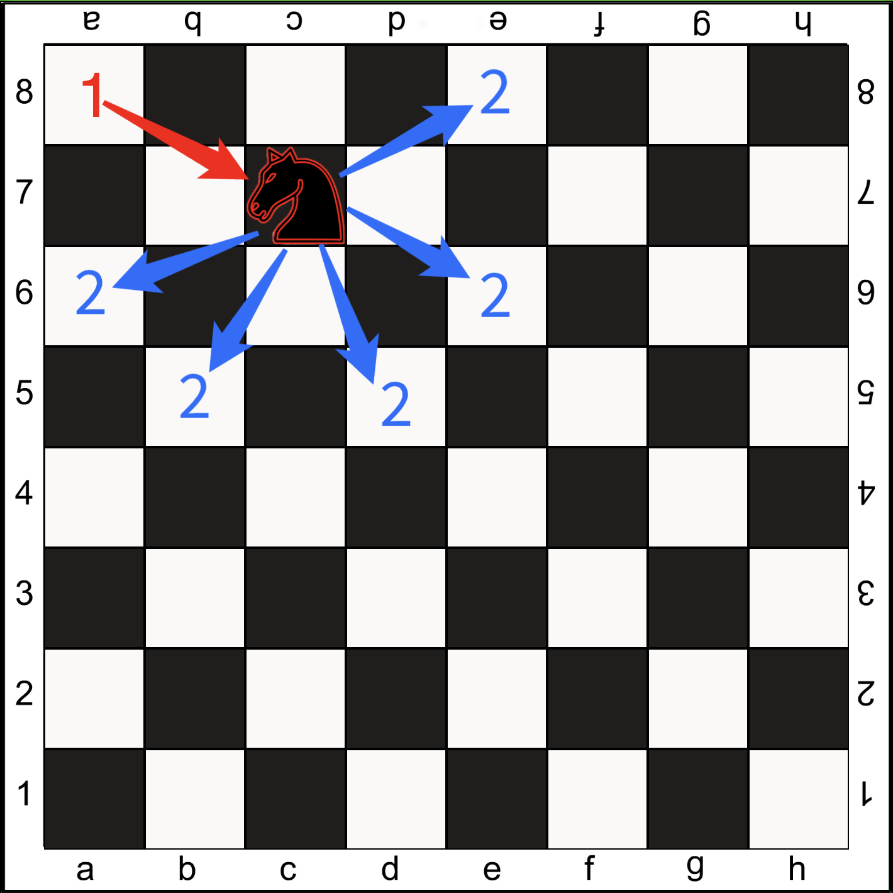

Knight's tour
A knight's tour is a sequence of moves of a knight on a chessboard
such that the knight visits every square exactly once. If the knight
ends on a square that is one knight's move from the beginning square
(so that it could tour the board again immediately, following the same
path), the tour is closed (or re-entrant); otherwise, it is open. The
knight's tour problem is the mathematical problem of finding a
knight's tour. Creating a program to find a knight's tour is a common
problem given to computer science students. Variations of the knight's
tour problem involve chessboards of different sizes than the usual 8 ×
8, as well as irregular (non-rectangular) boards.
Theory
The knight's tour problem is an instance of the more general
Hamiltonian path problem in graph theory. The problem of finding a
closed knight's tour is similarly an instance of the Hamiltonian cycle
problem. Unlike the general Hamiltonian path problem, the knight's
tour problem can be solved in linear time.
Existence
Schwenk proved that for any m × n board with m ≤ n, a closed knight's
tour is always possible unless one or more of these three conditions
are met:
- m and n are both odd
- m = 1, 2, or 4
- m = 3 and n = 4, 6, or 8.
Cull et al. and Conrad et al. proved that on any rectangular board
whose smaller dimension is at least 5, there is a (possibly open)
knight's tour.
Number of tours
On an 8 × 8 board, there are exactly 26,534,728,821,064 directed
closed tours (i.e. two tours along the same path that travel in
opposite directions are counted separately, as are rotations and
reflections). The number of undirected closed tours is half this
number, since every tour can be traced in reverse. There are 9,862
undirected closed tours on a 6 × 6 board.
Finding tours with computers
There are several ways to find a knight's tour on a given board with a
computer. Some of these methods are algorithms while others are
heuristics.
Brute-force algorithms
A brute-force search for a knight's tour is impractical on all but the
smallest boards. For example, there are approximately 4×1051 possible
move sequences on an 8 × 8 board, and it is well beyond the capacity
of modern computers (or networks of computers) to perform operations
on such a large set. However, the size of this number is not
indicative of the difficulty of the problem, which can be solved "by
using human insight and ingenuity ... without much difficulty."
Divide-and-conquer algorithms
A brute-force search for a knight's tour is impractical on all but the
smallest boards. For example, there are approximately 4×1051 possible
move sequences on an 8 × 8 board, and it is well beyond the capacity
of modern computers (or networks of computers) to perform operations
on such a large set. However, the size of this number is not
indicative of the difficulty of the problem, which can be solved "by
using human insight and ingenuity ... without much difficulty."
Warnsdorff's rule
Warnsdorff's rule is a heuristic for finding a single knight's tour.
The knight is moved so that it always proceeds to the square from
which the knight will have the fewest onward moves. When calculating
the number of onward moves for each candidate square, we do not count
moves that revisit any square already visited. It is possible to have
two or more choices for which the number of onward moves is equal;
there are various methods for breaking such ties, including one
devised by Pohl and another by Squirrel and Cull. This rule may also
more generally be applied to any graph. In graph-theoretic terms, each
move is made to the adjacent vertex with the least degree. Although
the Hamiltonian path problem is NP-hard in general, on many graphs
that occur in practice this heuristic is able to successfully locate a
solution in linear time. The knight's tour is such a special case. The
heuristic was first described in "Des Rösselsprungs einfachste und
allgemeinste Lösung" by H. C. von Warnsdorff in 1823. A computer
program that finds a knight's tour for any starting position using
Warnsdorff's rule was written by Gordon Horsington and published in
1984 in the book Century/Acorn User Book of Computer Puzzles.
Neural network solution
The neural network is designed such that each legal knight’s move on the chessboard is represented by a neuron. Therefore, the network basically takes the shape of the knight’s graph over an 𝑛×𝑛chess board. (A knight’s graph is simply the set of all knight moves on the board)
Each neuron can be either “active” or “inactive” (output of 1 or 0). If a neuron is active, it is considered part of the solution to the knight’s tour. Once the network is started, each active neuron is configured so that it reaches a “stable” state if and only if it has exactly two neighboring neurons that are also active (otherwise, the state of the neuron changes). When the entire network is stable, a solution is obtained. The complete transition rules are as follows:
𝑈𝑡 +1 ( 𝑁 𝑖 , 𝑗 ) = 𝑈 𝑡 ( 𝑁 𝑖 , 𝑗 ) +2 – ∑ 𝑁 ∈ 𝐺 ( 𝑁 𝑖 , 𝑗 ) 𝑉 𝑡 ( 𝑁 )
𝑉 𝑡 +1 ( 𝑁 𝑖 , 𝑗 ) = ⎧⎩⎨⎪⎪ 1 0 𝑉 𝑡 ( 𝑁 𝑖 , 𝑗 ) if 𝑈 𝑡 +1 ( 𝑁 𝑖 , 𝑗 ) >3 if 𝑈 𝑡 +1 ( 𝑁 𝑖 , 𝑗 ) <0 otherwise ,
where 𝑡 represents time (incrementing in discrete intervals), 𝑈 ( 𝑁 𝑖 , 𝑗 ) is the state of the neuron connecting square 𝑖 to square 𝑗, 𝑉 ( 𝑁 𝑖 , 𝑗 ) is the output of the neuron from 𝑖 to 𝑗, and 𝐺 ( 𝑁 𝑖 , 𝑗 ) is the set of “neighbors” of the neuron (all neurons that share a vertex with 𝑁 𝑖 , 𝑗).
Initially (at 𝑡 =0), the state of each neuron is set to 0, and the output of each neuron is set randomly to either 0 or 1. The neurons are then updated sequentially by counting squares on the chess board in row-major order and enumerating the neurons that represent knight moves out of each square.
Essentially, the network is configured to generate subgraphs of degree 2 within the knight’s graph. The set of degree-2 subgraphs naturally includes Hamiltonian circuits (re-entrant Knight’s Tours). However, there are many other solutions that would satisfy the network that are not knight’s tours. For example, the network could discover two or more small independent curcuits within the knight’s graph. In addition, there are certain cases that will cause the network to diverge (never become stable).
Knight’s Tour on an 8 ×8 board:

Not a Knight’s Tour, but still a solution (can you spot the four independent circuits?):

In fact, the probability of obtaining a knight’s tour on an 𝑛 × 𝑛board virtually vanishes as n grows larger. Takefuji, at the time of his publication, only obtained solutions for n < 20. Parberry was able to obtain a single knight's tour out of 40,000 trials for n = 26. I obtained one knight's tour out of about 200,000 trials for n = 28 (three days' worth of calculation on Pentium IV). Parberry wisely asserts that attempting to find a knight's tour for n > 30 using this method would be futile.
Notable Finds
 Symmetric 10 x 3 knight’s tour
 Symmetric 14 x 3 knight’s tour
 24 x 24 knight’s tour (2 hours cpu time)
26 x 26 knight’s tour (8 hours cpu time)
28 x 28 knight’s tour (50 hours cpu time)
Undoubtedly, knight’s tours for n > 28 can easily be found using simpler combinatorial algorithms, which seems to make this neural network solution for the knight’s tour problem less than practical. However, one cannot deny the inherent elegance in this kind of solution, which is what made it so interesting to investigate.
Our Implementation
To better imagine how our algorythm works, let's look at the image:

So, the main logic is to get the best possible path for the horse to go. After the first step is taken, the algorythm looks for the most suitable and available tile. The most suitable means that if we move to that tile, we will make the least moves in the future. The algorythm loops over and over till it finds the most suitable solution and starts to move the knight
You can try out our visualized version of this algorythm, just click the button below. Enjoy!